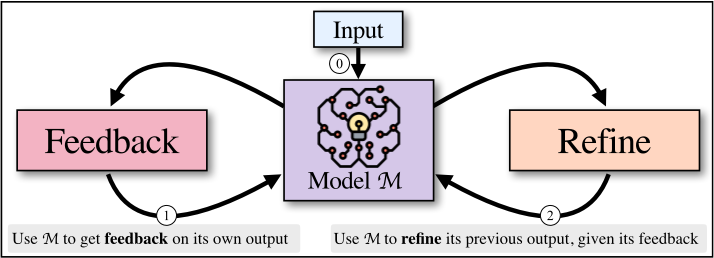
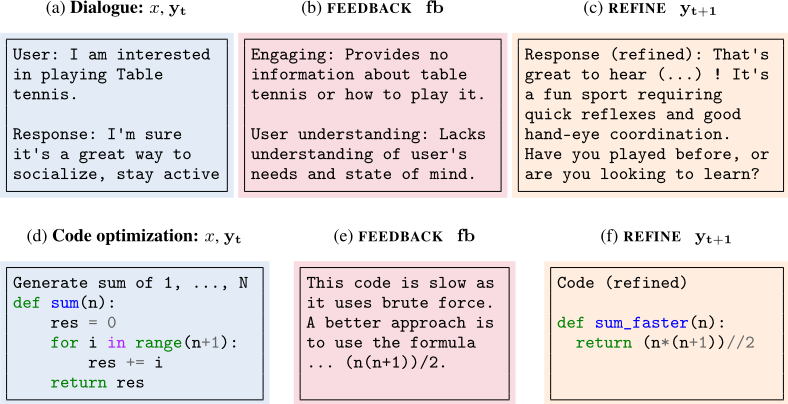
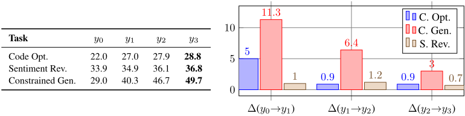
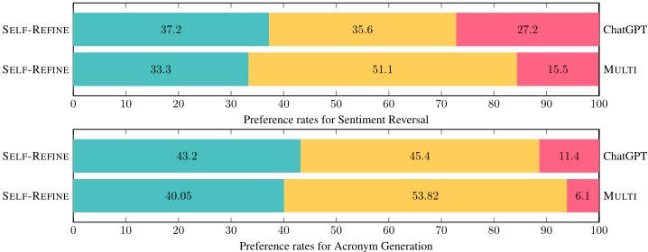
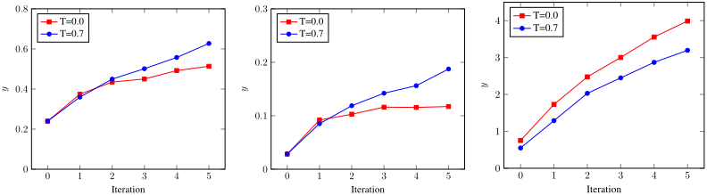
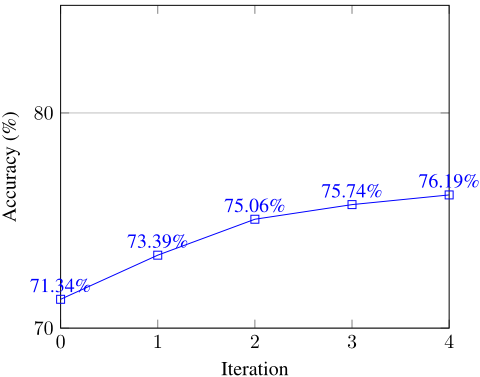
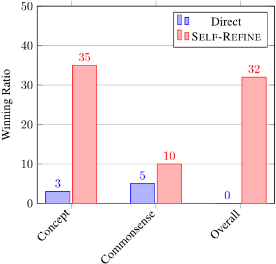
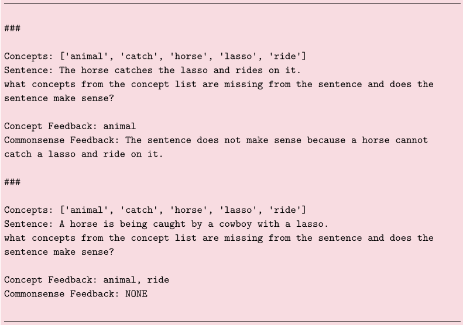

Self-Refine：基于自我反馈的迭代精炼
LLM 单次生成往往达不到最优质量，而传统迭代精炼方法需要训练专门的 refiner 或依赖昂贵的人工反馈。SELF-REFINE 提出让同一个 LLM 完成“生成→反馈→精炼”的迭代循环：先产出初稿，再用 few-shot 提示让同一模型给出具体、可执行（actionable & specific）的反馈，随后依据反馈改写，循环至停止条件，全程无需额外训练或强化学习。在对话回复、代码优化、代码可读性、数学推理等 7 个任务上，相对同模型单步生成平均带来约 20% 绝对提升，例如 GPT-4 在 Code Optimization 上从 27.3% 提升到 36.0%。消融表明反馈质量是关键，generic 或无反馈会显著掉分；失败案例中 61% 源于反馈给出不当修复建议。对团队而言，这是不训练模型即可提升产出质量的低成本迭代范式，可直接嵌入代码审查、文档改写与 Agent 反思环节。
LLM 单次生成的输出常无法满足多方面目标（如对话回复质量）或难以定义的目标（如代码可读性）；现有迭代精炼方法通常需要领域数据训练精炼模型、依赖外部监督、奖励模型或昂贵的人工标注，缺乏一种无需大量监督即可跨任务通用的精炼方案。
SELF-REFINE 让同一个 LLM 扮演生成器、反馈提供者与精炼器三重角色，用三个 few-shot 提示驱动：p_gen 生成初始输出 y0；p_fb 让模型对自身输出给出反馈，要求 actionable（含具体改进动作）且 specific（指出输出中需修改的具体短语），可包含多维度数值评分与 CoT 式推理；p_refine 依据反馈改写输出。FEEDBACK 与 REFINE 交替迭代（论文中最多 4 次），停止条件为固定步数或从反馈中提取的停止指标；历史反馈与输出会追加进提示以帮助模型避免重复犯错；多维度任务按各迭代中的最高总分选择最终输出。
7 个任务上相对同模型单步生成平均提升约 20%（绝对值），单项任务提升幅度 5-40%
GPT-4+SELF-REFINE 在 Code Optimization 上较 base GPT-4 绝对提升 8.7%（27.3%→36.0%）
Dialogue Response Generation 中 GPT-4 偏好得分从 25.4% 提升到 74.6%（+49.2%）
迭代收益：Code Optimization 得分从初始 22.0 升至三次迭代后 28.8，Constrained Generation 从 29.0 升至 49.7，Sentiment Reversal 从 33.9 升至 36.8，边际收益随迭代次数递减
反馈质量消融：Code Optimization 中 actionable 反馈 27.5 > generic 反馈 26.0 > 无反馈 24.8；Sentiment Transfer 从 43.2 降至 31.2，无反馈则任务失败；Acronym Generation 从 56.4 降至 48.0
失败归因：61% 失败源于反馈给出不当修复建议，33% 源于错误定位不准，仅 6% 源于 refiner 执行不当
1 vs k 对比：SELF-REFINE 输出在人工偏好上胜过同模型无反馈采样的 k=4 个初始输出
Vicuna-13B 无法稳定生成所需格式的反馈；混合方案（Vicuna-13b 初始化 + ChatGPT 反馈/精炼）将 Math Reasoning 从 24.18% 提升至 40.5%；Oracle 反馈使 GPT-3 在 Math Reasoning 提升 4.8%、GPT-4 提升 0.7%
代码可读性任务上，SELF-REFINE 在有意义变量比、注释率、函数单元数指标上达到或超过人工标注者水平
与需要训练 refiner、依赖人工反馈/标量奖励模型或 RL 的已有精炼方法不同，SELF-REFINE 用同一个 LLM 同时充当生成器、反馈提供者与精炼器，仅靠 few-shot 提示即可跨 7 个任务通用，无需任何额外训练数据或参数更新；反馈为自然语言、结构化、多维度（含数值评分）且要求 actionable 与 specific。与并行的 Reflexion/ReAct 相比，其反馈更细粒度、更结构化（多维反馈+评分），因此也适用于不涉及逐步规划的开放式生成任务（如开放域对话）。
相关度级别：high
命中能力域：3.2 提示工程 | 3.3 Agent 架构与工具使用 | 3.5 评测与可靠使用
理由：方法本体是纯提示工程驱动的迭代自反馈循环：p_gen/p_fb/p_refine 三套 few-shot 提示的设计、actionable & specific 反馈原则、多维数值评分与 CoT 式反馈，直接命中 3.2 提示工程；FEEDBACK-REFINE 循环是 Agent 反思/迭代模式的基础形态，论文明确与 ReAct/Reflexion 对比并论证结构化多维反馈优于自由反思，对应 3.3 的单 Agent 执行可靠性与 loop/harness 设计；其对反馈质量的消融实验、GPT-4-as-judge 与人工 A/B 评测、失败归因分析，以及代码优化/代码可读性这类 AI 辅助工程任务，与 3.5 的评测方法与可靠使用高度相关。团队不训练模型，而该方法的卖点恰是零训练、仅靠提示即可提升产出质量，落地门槛低、收益可量化。
建议动作：深入精读并做内部分享
arXiv:2303.17651v2 [cs.CL] 2023年5月25日
Aman Madaan 1, Niket Tandon 2, Prakhar Gupta 1, Skyler Hallinan 3, Luyu Gao 1, Sarah Wiegreffe 2, Uri Alon 1, Nouha Dziri 2, Shrimai Prabhumoye 4, Yiming Yang 1, Shashank Gupta 2, Bodhisattwa Prasad Majumder 5, Katherine Hermann 6, Sean Welleck 2, 3, Amir Yazdanbakhsh 6, Peter Clark 2
1 卡内基梅隆大学语言技术研究所（Language Technologies Institute, Carnegie Mellon University）
2 艾伦人工智能研究所（Allen Institute for Artificial Intelligence）
3 华盛顿大学 4 NVIDIA 5 加州大学圣地亚哥分校 6 谷歌研究院 Brain 团队
amadaan@cs.cmu.edu, nikett@allenai.org
与人类一样，大语言模型（LLM）在首次尝试时并不总能生成最佳输出。受人类修改自己书面文本的方式启发，我们提出了 SELF-REFINE，这是一种通过迭代反馈与改进来提升 LLM 初始输出的方法。其核心思想是：先使用一个 LLM 生成初始输出；随后，同一个 LLM 为其输出提供反馈，并利用该反馈对自身进行迭代改进。SELF-REFINE 不需要任何监督训练数据、额外训练或强化学习，而是使用单个 LLM 同时充当生成器、改进器和反馈提供者。我们使用最先进的 LLM（GPT-3.5 和 GPT-4），在从对话回复生成到数学推理的 7 项多样化任务上对 SELF-REFINE 进行了评估。在所有被评估的任务中，与同一 LLM 采用传统单步生成方式所产生的输出相比，由 SELF-REFINE 生成的输出在人类评价和自动指标上都更受青睐，任务性能平均绝对提升 ∼ 20%。我们的工作表明，即使是 GPT-4 这样最先进的 LLM，也可以借助我们这种简单、独立的方法在测试时得到进一步提升。1 .
尽管大语言模型（LLMs）能够生成连贯的输出，但它们在应对复杂需求时往往力有不逮。这主要包括具有多方面目标的任务，例如对话回复生成，或者目标难以明确定义的任务，例如提升程序可读性。在这些场景中，现代 LLM 或许能生成一个清晰可懂的初始输出，但仍可能受益于进一步的迭代精炼——即迭代地将候选输出映射为改进后的输出——以确保达到期望的质量。迭代精炼通常需要训练一个依赖于领域特定数据的精炼模型（例如 Reid and Neubig (2022); Schick et al. (2022a); Welleck et al. (2022)）。其他依赖外部监督或奖励模型的方法则需要大规模训练集或昂贵的人工标注（Madaan et al., 2021; Ouyang et al., 2022），而这些并不总是能够获得。这些局限性凸显了对一种有效精炼方法的需求，这种方法能够应用于各种任务而无需大量监督。
迭代式自我精炼是人类解决问题的一项基本特征（Simon, 1962; Flower and Hayes, 1981; Amabile, 1983）。迭代式自我精炼是一个先创建初始草稿、随后依据自我提供的反馈对其进行精炼的过程。例如，在

起草一封向同事索取文档的电子邮件时，人们最初可能会写出一个直接的请求，例如“尽快把数据发给我”。然而，经过反思，写信人会意识到这种措辞可能不够礼貌，于是将其修改为“Ashley 你好，能否在你方便时尽早把数据发给我？”。在编写代码时，程序员可能先实现一个“快速而粗糙”（quick and dirty）的初始版本，然后经过反思，将代码重构为更高效、更易读的解决方案。在本文中，我们证明 LLM 无需额外训练即可实现迭代式自我精炼，从而在广泛的任务上产生更高质量的输出。
我们提出 SELF-REFINE：一种迭代式自我精炼算法，它在两个生成步骤——FEEDBACK 和 REFINE——之间交替进行。这两个步骤协同工作，以生成高质量输出。给定由模型 M 生成的初始输出，我们将其传回同一模型 M 以获取反馈。随后，该反馈被传回同一模型，用于精炼先前生成的草稿。这一过程会重复进行，要么进行指定的迭代次数，要么直到 M 判定无需进一步精炼为止。我们使用少样本提示（few-shot prompting）（Brown et al., 2020）来引导 M 既生成反馈，又将反馈融入改进后的草稿。图 1 展示了这一高层思想：SELF-REFINE 使用同一个底层语言模型来生成反馈并精炼其输出。
我们在涵盖自然语言与源代码生成等多个领域的 7 项生成任务上对 SELF-REFINE 进行了评估。结果表明，与 GPT-3.5（text-davinci-003 和 gpt-3.5-turbo；OpenAI；Ouyang et al., 2022）和 GPT-4（OpenAI, 2023）等强大的大语言模型（LLM）的直接生成相比，SELF-REFINE 带来了 5-40% 的绝对提升。在代码生成任务中，当应用于 Codex（code-davinci-002；Chen et al., 2021）等强大的代码模型时，SELF-REFINE 可将初始生成结果最多提升 13%（绝对值）。我们公开了全部代码，这些代码可以方便地扩展到其他 LLM。本质上，我们的结果表明，即使 LLM 在首次尝试时无法生成最优输出，它通常也能提供有用的反馈，并据此改进自身的输出。反过来，SELF-REFINE 提供了一种无需任何额外训练、即可通过迭代式（自我）反馈与精炼从单一模型获得更好输出的有效方法。
给定一个输入序列，SELF-REFINE 会生成一个初始输出，对该输出提供反馈，并根据反馈对输出进行精炼。SELF-REFINE 在反馈与精炼之间不断迭代，直到满足期望的条件为止。SELF-REFINE 依赖于一个合适的语言模型和三个提示（分别用于初始生成、反馈和精炼），并且不需要任何训练。SELF-REFINE 如图 1 和算法 1 所示。接下来，我们将更详细地描述 SELF-REFINE。
初始生成 给定输入 x、提示 p gen 和模型 M，SELF-REFINE 生成一个初始输出 y 0：

图 2：SELF-REFINE 的示例：由基础 LLM 生成初始输出，随后将其传回同一个 LLM 以接收反馈，再交给同一个 LLM 对输出进行精炼。上排展示了对话生成中的这一过程：通过应用反馈，初始的对话回复可以被转化为一个更具吸引力、同时也能理解用户的回复。下排展示了代码优化中的这一过程：通过应用反馈，代码变得更加高效。
Require: 输入 x，模型 M，提示 {p gen, p fb, p refine}，停止条件 stop(·)
1: y 0 = M(p gen ∥ x) ▷ 初始生成（式 1）
2: for 迭代 t ∈ 0, 1, ... do
3: fb t = M(p fb ∥ x ∥ y t) ▷ 反馈（式 2）
4: if stop(fb t, t) then ▷ 停止条件
5: break
6: else
7: y t+1 = M(p refine ∥ x ∥ y 0 ∥ fb 0 ∥ ... ∥ y t ∥ fb t) ▷ 精炼（式 4）
8: end if
9: end for
10: return y t
例如，在图 2(d) 中，模型针对给定输入生成了功能正确的代码。这里，p gen 是用于初始生成的任务特定少样本提示（few-shot prompt）（或指令），∥ 表示拼接。该少样本提示包含该任务的输入-输出对 ⟨x (k), y (k)⟩。2
FEEDBACK（反馈） 接下来，SELF-REFINE 使用同一个模型 M，在给定用于生成反馈的任务特定提示 p fb 的情况下，对其自身的输出提供反馈 fb t：
直观上，反馈可以涉及输出的多个方面。例如，在代码优化中，反馈可能会涉及代码的效率、可读性和整体质量。
2 少样本提示（few-shot prompting，也称为“上下文学习”（in-context learning））为模型提供一个由目标任务的 k 个上下文示例组成的提示，每个示例均为输入-输出对 ⟨x i, y i⟩ 的形式（Brown et al., 2020）。
这里，提示 p fb 以输入-输出-反馈三元组 ⟨x (k), y (k), f b (k)⟩ 的形式提供反馈示例。我们通过 fb (k) 提示模型撰写可操作且具体的反馈。所谓“可操作”（actionable），是指反馈应包含一个很可能改进输出的具体行动。所谓“具体”（specific），是指反馈应指出输出中需要修改的具体语句。例如，图 2(e) 中的反馈是“这段代码很慢，因为它使用了一个暴力穷举的 for 循环。更好的方法是使用公式 ... (n(n+1))/2”。该反馈是可操作的，因为它建议了“使用公式……”这一行动。该反馈是具体的，因为它提到了“for 循环”。
REFINE（精炼） 接下来，SELF-REFINE 使用 M，在给定其自身反馈的情况下，对其最近的输出进行精炼：
例如，在图 2(f) 中，给定初始输出和生成的反馈，模型生成了一个重新实现，其比初始实现更短且运行速度快得多。提示 p refine 以输入-输出-反馈-精炼四元组 ⟨x (k), y (k) t, f b (k) t, y (k) t+1⟩ 的形式提供了基于反馈改进输出的示例。
迭代 SELF-REFINE SELF-REFINE 在 FEEDBACK 与 REFINE 步骤之间交替进行，直至满足停止条件。停止条件 stop(fb t, t) 要么在指定的时间步 t 处停止，要么从反馈中提取一个停止指示器（例如标量停止分数）。在实践中，可以通过 p fb 提示模型生成停止指示器，且该条件是按任务确定的。
为了让模型了解之前的迭代情况，我们通过将先前的反馈和输出附加到提示中来保留它们的历史记录。直观地说，这使得模型能够从过去的错误中学习并避免重复这些错误。更准确地说，公式 (3) 实际上被实例化为：
最后，我们将最后一次精炼得到的 y t 作为 SELF-REFINE 的输出。
算法 1 总结了 SELF-REFINE，图 2 展示了 SELF-REFINE 在对话回复生成（Dialogue Response Generation）（Mehri and Eskenazi, 2020）和代码优化（Code Optimization）（Madaan et al., 2023）任务中的示例。附录 S 提供了针对各种任务的 p gen 、p fb 、p refine 提示示例。其核心思想是：SELF-REFINE 使用同一个底层 LLM 来生成输出、获取反馈，并根据自身的反馈对输出进行精炼。它仅依赖于少样本（few-shot）示例中已有的监督信息。
我们在 7 项多样化任务上评估 SELF-REFINE：对话回复生成（Dialogue Response Generation）（附录 M；Mehri and Eskenazi, 2020）、代码优化（Code Optimization）（附录 N；Madaan et al., 2023）、代码可读性改进（Code Readability Improvement）（附录 L；Puri et al., 2021）、数学推理（Math Reasoning）（附录 O；Cobbe et al., 2021）、情感反转（Sentiment Reversal）（附录 P；Zhang et al., 2015），此外我们引入了两项新任务：缩写词生成（Acronym Generation）（附录 Q）和受约束生成（Constrained Generation）（Lin et al. (2020) 的更难版本，使用 20-30 个关键词约束而非 3-5 个；附录 R）。
所有任务的示例及数据集统计信息见表 4（附录 A）。
We instantiate SELF-REFINE following the high-level description in Section 2. The FEEDBACKREFINE iterations continue until the desired output quality or task-specific criterion is reached, up to a maximum of 4 iterations. To make our evaluation consistent across different models, we implemented both FEEDBACK and REFINE as few-shot prompts even with models that respond well to instructions, such as ChatGPT and GPT-4.
Base LLMs Our main goal is to evaluate whether we can improve the performance of any strong base LLMs using SELF-REFINE. Therefore, we compare SELF-REFINE to the same base LLMs but without feedback-refine iterations. We used three main strong base LLM across all tasks: GPT-3.5 ( text-davinci-003 ), ChatGPT ( gpt-3.5-turbo ), and GPT-4 (OpenAI, 2023). For code-based tasks, we also experimented with CODEX ( code-davinci-002 ). In all tasks, either GPT-3.5 or GPT-4 is the previous state-of-the-art. 3 We used the same prompts from previous work when Table 1: SELF-REFINE results on various tasks using GPT-3.5, ChatGPT, and GPT-4 as base LLM. SELF-REFINE consistently improves LLM. Metrics used for these tasks are defined in Section 3.2.
3 A comparison with other few-shot and fine-tuned approaches is provided in Appendix F
| Task | GPT-3.5.Base | GPT-3.5.+SELF-REFINE | ChatGPT.Base | ChatGPT.+SELF-REFINE | GPT-4.Base | GPT-4.+SELF-REFINE |
|---|---|---|---|---|---|---|
| Sentiment Reversal | 8.8 | 30.4 ( ↑ 21.6) | 11.4 | 43.2 ( ↑ 31.8) | 3.8 | 36.2 ( ↑ 32.4) |
| Dialogue Response | 36.4 | 63.6 ( ↑ 27.2) | 40.1 | 59.9 ( ↑ 19.8) | 25.4 | 74.6 ( ↑ 49.2) |
| Code Optimization | 14.8 | 23.0 ( ↑ 8.2) | 23.9 | 27.5 ( ↑ 3.6) | 27.3 | 36.0 ( ↑ 8.7) |
| Code Readability | 37.4 | 51.3 ( ↑ 13.9) | 27.7 | 63.1 ( ↑ 35.4) | 27.4 | 56.2 ( ↑ 28.8) |
| Math Reasoning | 64.1 | 64.1 (0) | 74.8 | 75.0 ( ↑ 0.2) | 92.9 | 93.1 ( ↑ 0.2) |
| Acronym Generation | 41.6 | 56.4 ( ↑ 14.8) | 27.2 | 37.2 ( ↑ 10.0) | 30.4 | 56.0 ( ↑ 25.6) |
| Constrained Generation | 28 | 37.0 ( ↑ 9.0) | 44 | 67.0 ( ↑ 23.0) | 15 | 45.0 ( ↑ 30.0) |
| Task | GPT-3.5.Base | GPT-3.5.+SELF-REFINE | ChatGPT.Base | ChatGPT.+SELF-REFINE | GPT-4.Base | GPT-4.+SELF-REFINE |
available (such as for Code Optimization and Math Reasoning); otherwise, we created prompts as detailed in Appendix S. We use greedy decoding with a temperature of 0.7 for all setups.
我们报告三种类型的指标：
表 1 展示了我们的主要结果：
SELF-REFINE 在所有模型规模上都持续优于基础模型，并且在所有任务上均超越了以往的最先进水平。例如，GPT-4+SELF-REFINE 在代码优化（Code Optimization）任务上比基础 GPT-4 提升了 8.7%（绝对值），将优化百分比从 27.3% 提高到 36.0%。置信区间见附录 J。对于基于代码的任务，我们在使用 CODEX 时观察到了类似的趋势；这些结果包含在附录 F 中。
与基础模型相比，我们观察到提升幅度最大的任务之一是约束生成（Constrained Generation），该任务要求模型生成一个包含最多 30 个给定概念的句子。我们认为该任务从 SELF-REFINE 中获益显著，因为模型在首次尝试时更有可能遗漏某些概念，而 SELF-REFINE 使模型能够随后修正这些错误。此外，该任务存在数量极其庞大的合理输出，因此 SELF-REFINE 能够更好地探索可能输出的空间。
在对话回复生成（Dialogue Response Generation）、情感反转（Sentiment Reversal）和缩写词生成（Acronym Generation）等基于偏好的任务中，SELF-REFINE 带来了尤为显著的提升。例如，在对话回复生成任务中，GPT-4 的偏好分数提升了 49.2%——从 25.4% 提高到 74.6%。类似地，在其他基于偏好的任务中，我们在所有模型上都看到了显著的改进。
数学推理（Math Reasoning）任务中性能提升较为有限，其原因可以追溯到无法准确识别是否存在错误。在数学中，错误可能非常细微，有时仅局限于某一行或某一步错误的运算。另外，一条看起来连贯一致的推理链可能会让大语言模型（LLMs）误以为“一切看起来都没问题”（例如，ChatGPT 对 94% 的实例给出的反馈都是“一切看起来都没问题”）。在附录 H.1 中，我们表明，如果外部来源能够识别当前数学答案是否错误，SELF-REFINE 在数学推理任务上的收益会大得多（5% 以上）。
提升在不同规模的基础 LLM 上保持一致。总体而言，GPT-4+SELF-REFINE 在所有任务上的表现都优于 GPT-3.5+SELF-REFINE 和 ChatGPT+SELF-REFINE，即使在 GPT-4 的初始基础结果低于 GPT-3.5 或 ChatGPT 的任务上也是如此。因此我们认为，SELF-REFINE 能够让更强的模型（例如 GPT-4）释放其全部潜力，即便这种潜力在标准的单遍输出生成中并未显现。与其他强基线的比较见附录 F。
SELF-REFINE 的三个主要步骤是 FEEDBACK、REFINE，以及对这两个步骤的迭代重复。在本节中，我们进行了额外的实验，以分析其中每个步骤的重要性。
| Task | SELF-REFINE feedback | Generic feedback | No feedback |
|---|---|---|---|
| Code Optimization | 27.5 | 26 | 24.8 |
| Sentiment Reversal | 43.2 | 31.2 | 0 |
| Acronym Generation | 56.4 | 54 | 48 |
| Task | SELF-REFINE feedback | Generic feedback | No feedback |
**反馈质量的影响** 反馈质量在 SELF-REFINE 中起着至关重要的作用。为了量化其影响，我们将利用具体、可操作反馈的 SELF-REFINE 与两种消融变体进行比较：一种使用通用反馈，另一种不使用反馈（模型仍然可以对其生成结果进行迭代改进，但不会获得用于此目的的显式反馈）。例如，在代码优化（Code Optimization）任务中：诸如“避免在 for 循环中重复计算”这样的可操作反馈，能够精准指出问题所在并提出明确的改进建议；而诸如“提高代码的效率”这样的通用反馈，则缺乏这种精确性和方向性。表 2 展示了反馈的明显影响。
在代码优化任务中，性能从 27.5（SELF-REFINE 反馈）略微下降至 26.0（通用反馈），并进一步下降至 24.8（无反馈）。这表明，虽然通用反馈能提供一定的指导，但具体、可操作的反馈能带来更优的结果。
这种效应在情感迁移（Sentiment Transfer）等任务中更为明显：从我们的反馈切换为通用反馈会导致性能显著下降（从 43.2 降至 31.2），而在没有反馈的情况下任务会失败。类似地，在缩写词生成（Acronym Generation）任务中，即便进行了迭代改进，在缺乏可操作反馈的情况下，性能也从 56.4 下降至 48.0。这些结果凸显了具体、可操作的反馈在我们方法中的重要性。即使是通用反馈也能带来一定收益，但最佳结果是通过有针对性、具有建设性的反馈取得的。
**FEEDBACK-REFINE 的多次迭代有多重要？** 图 4 表明，平均而言，输出质量会随着迭代次数的增加而提升。例如，在代码优化任务中，初始输出（y 0）的得分为 22.0，经过三次迭代后（y 3）提升至 28.8。类似地，在情感反转（Sentiment Reversal）任务中，初始输出的得分为 33.9，三次迭代后提升至 36.8。这一改进趋势在受约束生成（Constrained Generation）任务中同样明显，其得分在三次迭代后从 29.0 提升至 49.7。图 4 突出显示了随着迭代次数增加、改进收益递减的现象。总体而言，进行多次 FEEDBACK-REFINE 迭代能显著提升输出质量，尽管边际改进自然会随着迭代次数的增多而递减。
性能并不总是随迭代而单调上升：在缩写词生成这类多方面反馈的任务中，输出质量在迭代过程中可能发生波动，即某一方面有所改进而另一方面却有所下降。为了应对这一问题，SELF-REFINE 会针对不同的质量方面生成数值评分，从而实现均衡的评估与恰当的输出选择。
| Task | y 0 | y 1 | y 2 | y 3 |
|---|---|---|---|---|
| Code Opt. | 22 | 27 | 27.9 | 28.8 |
| Sentiment Rev. | 33.9 | 34.9 | 36.1 | 36.8 |
| Constrained Gen. | 29 | 40.3 | 46.7 | 49.7 |
| Task | y 0 | y 1 | y 2 | y 3 |

# Slower code def solve(amount): best_price = (amount + 199) // 200 * 380 ↪ → # First loop for a in range(amount // 200 + 1): # ... 4 nested loops ... for c1 in range(amount // 1500 + 1): ↪ → if a*200 + b*300 == amount: price = a*380 + b*550 if price < best_price: best_price = price return best_price
# Faster code def solve(amount): coins = [200, 300] prices = [380, 550] dp = [float('inf')] * (amount + 1) dp[0] = 0 for i in range(len(coins)): for j in range(coins[i], amount+1): dp[j] = min(dp[j], dp[j - coins[i]] + prices[i]) ↪ → return dp[amount]
我们能否只生成多个输出而不进行精炼？SELF-REFINE 的提升究竟来自迭代精炼，还是仅仅因为它生成了更多输出？我们将 SELF-REFINE 与 ChatGPT 进行比较，其中 ChatGPT 生成 k = 4 个样本（但不使用反馈和精炼）。然后，我们在 1 vs. k 的评估中将 SELF-REFINE 的性能与这 k 个初始输出进行比较。换言之，我们评估 SELF-REFINE 能否胜过全部 k 个初始输出。该实验的结果如图 6（附录 H）所示。尽管 1 vs. k 设定的难度更高，SELF-REFINE 的输出仍然比全部 k 个初始输出更受人类青睐。这表明，依据反馈进行精炼比仅生成多个初始输出这一替代方案更为重要。
SELF-REFINE 在较弱的模型上是否有效？第 3.3 节的实验是用一些目前最强的模型进行的；那么 SELF-REFINE 在更小或更弱的模型上是否同样有效？为探究这一问题，我们使用 Vicuna-13B（Chiang et al., 2023）这一能力较弱的基础模型来实例化 SELF-REFINE。虽然 Vicuna-13B 能够生成初始输出，但它在精炼过程中遇到了显著困难。具体而言，Vicuna-13B 无法持续地以所需格式生成反馈。此外，即使为其提供 Oracle 反馈或硬编码反馈，它也常常无法遵循用于精炼的提示。Vicuna-13B 并未对其输出进行精炼，而是要么重复相同的输出，要么生成出现幻觉的对话，导致输出效果不佳。因此我们推测，由于 Vicuna-13B 是在对话数据上训练的，其在测试时少样本任务上的泛化能力不如基于指令的模型。示例输出与分析见附录 G。
定性分析 我们对 SELF-REFINE 生成的反馈及其后续精炼结果进行了定性分析。我们针对代码优化（Madaan et al., 2023）和数学推理（Cobbe et al., 2021）两项任务，共人工分析了 70 个样本（35 个成功案例和 35 个失败案例）。在数学推理和代码优化两项任务中，我们发现反馈大多具有可操作性，其中多数反馈指出了原始生成中存在问题的方面，并给出了纠正这些问题的方法。
当 SELF-REFINE 未能改进原始生成结果时，大多数问题源于反馈有误，而非改进结果本身存在缺陷。具体而言，33% 的失败案例是由于反馈未能准确指出错误所在的位置，61% 是由于反馈给出了不恰当的修复建议。仅有 6% 的失败是由于改进器（refiner）错误地执行了本来良好的反馈。这些观察结果凸显了准确反馈在 SELF-REFINE 中所起到的至关重要的作用。
在成功的案例中，有 61% 的情况是改进器在准确且有用的反馈指导下，对原始生成结果做出了精确的修复。有趣的是，即使反馈部分不正确，改进器也能够纠正问题，这种情况占成功案例的 33%。这表明其对次优反馈具有一定的韧性。未来的研究可以着重考察改进器对各种类型反馈错误的鲁棒性，并探索增强这种韧性的方法。在图 5 中，我们展示了 SELF-REFINE 如何借助富有洞察力的反馈，将暴力求解方法转变为动态规划解法，从而显著提升程序效率。附录 H 提供了对对话响应生成（Dialogue Response Generation）等其他数据集的更多分析。
超越基准测试 虽然我们的评估聚焦于基准测试（benchmark）任务，但 SELF-REFINE 在设计时便考虑了更广泛的适用性。我们在网站生成这一真实应用场景中对这一点进行了探索：用户提供一个高层次的目标，SELF-REFINE 协助迭代地开发该网站。从简陋的初始设计出发，SELF-REFINE 对 HTML、CSS 和 JS 进行改进，使网站在可用性和美观性两方面不断演进。这展示了 SELF-REFINE 在真实世界、复杂且富有创造性任务中的潜力。示例及进一步讨论（包括我们工作更广泛的社会影响）见附录 I。
利用人类和机器生成的自然语言（NL）反馈来改进输出，已在多种任务中取得成效，包括摘要生成（Scheurer et al., 2022）、脚本生成（Tandon et al., 2021）、程序合成（Le et al., 2022a; Yasunaga and Liang, 2020）以及其他任务（Bai et al., 2022a; Schick et al., 2022b; Saunders et al., 2022a; Bai et al., 2022b; Welleck et al., 2022）。各种改进方法在反馈的来源与格式以及获取改进器的方式上有所不同。表 3 总结了一些相关方法；更多讨论见附录 B。
反馈来源。人类一直是一种有效的反馈来源（Tandon et al., 2021; Elgohary et al., 2021; Tandon et al., 2022; Bai et al., 2022a）。由于人类反馈成本高昂，若干方法采用标量奖励函数作为人类反馈的替代（或备选）（例如 (Bai et al., 2022a; Liu et al., 2022; Lu et al., 2022; Le et al., 2022a; Welleck et al., 2022)）。编译器（Yasunaga and Liang, 2020）或维基百科编辑记录（Schick et al., 2022b）等替代来源可以提供特定领域的反馈。近来，大语言模型（LLM）已被用于为通用领域生成反馈（Fu et al., 2023; Peng et al., 2023; Yang et al., 2022）。然而，我们的方法是唯一一种利用 LLM 对其自身输出生成反馈、并以同一 LLM 进行改进的方法。
反馈的表示形式。反馈的形式大体上可分为自然语言（NL）反馈与非 NL 反馈。非 NL 反馈可以是人类提供的示例对（Dasgupta et al., 2019）或标量奖励（Liu et al., 2022; Le et al., 2022b）。在本工作中，我们使用 NL 反馈，因为这使得模型能够利用生成输出的同一语言模型（LM）轻松提供自反馈，同时还能利用诸如 GPT-4 这样的现有预训练 LLM。
| Supervision- free refiner | Supervision- free feedback | Multi-aspect feedback | Iterative | |
|---|---|---|---|---|
| Learned refiners : PEER (Schick et al., 2022b), Self-critique (Saunders et al., 2022b), CodeRL (Le et al., 2022b), Self-correction (Welleck et al., 2022). | or | or | ||
| Prompted refiners : Augmenter (Peng et al., 2023), Re 3 (Yang et al., 2022), Reflexion (Shinn et al., 2023). | or | |||
| SELF-REFINE (this work) |
| | Supervision- free refiner | Supervision- free feedback | Multi-aspect feedback | Iterative |
改进器的类型。反馈与改进的配对已被用于学习有监督的改进器（Schick et al., 2022b; Du et al., 2022; Yasunaga and Liang, 2020; Madaan et al., 2021）。由于收集有监督数据成本高昂，一些方法利用模型自身的生成结果来学习改进器（Welleck et al., 2022; Peng et al., 2023）。然而，这些改进器需要针对每个新领域分别训练。最后，(Yang et al., 2022) 使用了专门为故事生成定制的基于提示的反馈与改进。在本工作中，我们避免训练单独的改进器，并表明同一模型可以在多个领域中同时充当改进器和反馈来源。
非精炼式强化学习（RL）方法。与进行显式精炼不同，另一种融入反馈的方式是优化标量奖励函数，例如使用强化学习（例如 Stiennon et al. (2020)；Lu et al. (2022)；Le et al. (2022a)）。这些方法与 SELF-REFINE 的不同之处在于，模型不会获取针对中间生成结果的反馈。其次，与 SELF-REFINE 不同，这些 RL 方法需要更新模型的参数。
我们方法的主要局限在于，基础模型需要具备足够的少样本（few-shot）建模能力或指令遵循能力，才能学会提供反馈并以上下文（in-context）方式进行精炼，而无需训练监督模型或依赖监督数据。
此外，本工作的实验使用的是未开源的语言模型，即 GPT-3.5、ChatGPT、GPT-4 和 CODEX。现有文献（Ouyang et al., 2022）并未完整描述这些模型的细节，例如预训练语料库、模型规模和模型偏差。此外，这些模型并非免费使用，将其用于研究需要一定的资金支持。尽管如此，我们发布了代码和模型输出，以确保本工作的可复现性。
本工作的另一个局限在于，我们仅在英文数据集上进行了实验。在其他语言上，当前模型可能无法提供同样的收益。
最后，恶意行为者有可能利用提示技术来引导模型生成更多有毒或有害的文本。我们的方法并未针对这一点提供显式的防护。
我们提出了 SELF-REFINE：一种新颖的方法，使大语言模型（LLM）能够迭代地提供自我反馈并精炼自身的输出。SELF-REFINE 在单个 LLM 内运行，既不需要额外的训练数据，也不需要强化学习。我们在多种多样的任务上展示了 SELF-REFINE 的简单性与易用性。通过展示 SELF-REFINE 在多样化任务中的潜力，我们的研究为大语言模型的持续探索与发展做出了贡献，旨在降低现实场景中人类创造性过程的成本。我们希望这种迭代式方法能够推动该领域的进一步研究。为此，我们将所有代码、数据和提示词以匿名方式发布在 https://selfrefine.info/ 。
表 4 列出了我们评估中所使用的任务，以及来自每个任务的示例。
| Task and Description | Sample one iteration of FEEDBACK-REFINE |
|---|---|
| Sentiment Reversal Rewrite reviews to reverse sentiment. Dataset: (Zhang et al., 2015) 1000 review pas- sages | x : The food was fantastic...' y t : The food was disappointing...' fb : Increase negative sentiment y t +1 : The food was utterly terrible...' |
| Dialogue Response Generation Produce rich conversational responses. Dataset: (Mehri and Eskenazi, 2020) 372 conv. | x : What's the best way to cook pasta?' y t : The best way to cook pasta is to...' fb : Make response relevant, engaging, safe y t +1 : Boil water, add salt, and cook pasta...' |
| Code Optimization Enhance Python code efficiency Dataset: (Madaan et al., 2023): 1000 programs | x : Nested loop for matrix product y t : NumPy dot product function fb : Improve time complexity y t +1 : Use NumPy's optimized matmul function |
| Code Readability Improvement Refactor Python code for readability. Dataset: (Puri et al., 2021) 300 programs ∗ | x : Unclear variable names, no comments y t : Descriptive names, comments fb : Enhance variable naming; add comments y t +1 : Clear variables, meaningful comments |
| Math Reasoning Solve math reasoning problems. Dataset: (Cobbe et al., 2021) 1319 questions | x : Olivia has $23, buys 5 bagels at $3 each' y t : Solution in Python fb : Show step-by-step solution y t +1 : Solution with detailed explanation |
| Acronym Generation Generate acronyms for a given title Dataset: (Appendix Q) 250 acronyms | x : Radio Detecting and Ranging' y t : RDR fb : be context relevant; easy pronunciation y t +1 : RADAR' |
| Constrained Generation Generate sentences with given keywords. Dataset: (Lin et al., 2020) 200 samples | x : beach, vacation, relaxation y t : During our beach vacation... fb : Include keywords; maintain coherence y t +1 : .. beach vacation was filled with relaxation |
| Task and Description | Sample one iteration of FEEDBACK-REFINE |
表 4：我们对 SELF-REFINE 进行评估的任务概览，包括各任务所关联的数据集及规模。对于每个任务，我们展示了输入 x、先前生成的输出 y t、所生成的反馈 fb t 以及细化结果 y t +1 的单次迭代细化示例。FEEDBACK 和 REFINE 所使用的少样本提示（few-shot prompts）见附录 S。
14
与同期工作 Reflexion（Shinn et al., 2023）相比，我们的方法是通过反馈进行修正，而他们的设置是在规划中利用 ReAct 寻找下一个最优解。ReAct 和 Reflexion 提供的是关于某一步骤是否被正确执行以及潜在改进的自由形式反思，而我们的方法更加细粒度且结构化，具有多维度的反馈和评分。这一区别使我们的方法能够提供更精确、更可操作的反馈，从而适用于更广泛的自然语言生成任务，包括那些不一定涉及逐步规划的任务，例如开放式对话生成。
与 Welleck et al. (2022) 的比较 与我们最接近的工作可能是 Self-Correction（Welleck et al., 2022）；然而，与 SELF-REFINE 相比，Self-Correction 存在若干缺点：
与非细化型强化学习（reinforcement learning, RL）方法的比较。除了使用显式的细化模块之外，另一种引入反馈的方式是优化标量奖励函数，例如通过强化学习（如 Stiennon et al. (2020)；Lu et al. (2022)；Le et al. (2022a)）。这些方法与 SELF-REFINE（以及更一般地，基于细化的方法）的不同之处在于，模型无法获取关于中间生成结果的反馈。其次，这些强化学习方法需要更新模型的参数，而 SELF-REFINE 则不需要。
| Method | Primary Novelty | zero/few shot improvement | multi aspect critics | NLfeedback with er- ror localization | iterative framework |
|---|---|---|---|---|---|
| RLHF (Stiennon et al., 2020) Rainier RL (Liu et al., 2022) QUARK RL (Lu et al., 2022) Code RL (Le et al., 2022a) | optimize for human preference RL to generate knowledge quantization to edit generations actor critic RL for code im- provement | trained on feedback trained on end task trained on end task trained on end task | single (human) single(accuracy) single(scalar score) single(unit tests) | (not self gen.) (knowl. only) (dense signal) (dense signal) | (train time iter.) |
| DrRepair (Yasunaga and Liang, 2020) PEER (Schick et al., 2022b) Self critique (Saunders et al., 2022a) Self-correct (Welleck et al., 2022) Const. AI (Bai et al., 2022b) | Compiler feedback to itera- tively repair doc. edit trained on wiki edits few shot critique generation novel training of a corrector train RL4F on automat (cri- tique, revision) pair | trained semi sup. trained on edits feedback training trained on end task critique training | single(compiler msg) single(accuracy) single(human) single (task specific) (fixed set) | (not self gen.) (not self gen.) (self gen.) (limited setting) | (limited setting) |
| Self-ask (Press et al., 2022) | ask followup ques when in- terim ans correct;final wrong | few shot | none | (none) | |
| GPT3 score (Fu et al., 2023) | GPT can score generations with instruction | few shot | single(single utility fn) | (none) | |
| Augmenter (Peng et al., 2023) | factuality feedback from exter- nal KBs | few shot | single(factuality) | (self gen.) | |
| Re 3 (Yang et al., 2022) | ∼ ours: but one domain, trained critics | few shot | (trained critics) | (not self gen.) | |
| SELF-REFINE | fewshot iterative multi aspect NL fb | few shot | multiple(few shot critics) | (self gen.) |
| Method | Primary Novelty | zero/few shot improvement | multi aspect critics | NLfeedback with er- ror localization | iterative framework |
，经训练的修正器方法以橙色显示，少样本修正器方法以绿色显示。
我们研究中的 A/B 评估由论文作者本人进行，评估时向人类评判者展示一个输入、任务指令，以及由基线方法和 SELF-REFINE 生成的两个候选输出。该设置为盲测，即评判者不知道哪个输出是由哪种方法生成的。随后要求评判者选择与任务指令更加一致的输出。对于涉及 A/B 评估的任务，我们将相对改进计算为偏好率的百分比提升。偏好率表示标注者选择 SELF-REFINE 生成的输出而非基线方法输出的次数所占比例。表 6 展示了结果。
| Task | SELF-REFINE (%) | Direct (%) | Either (%) |
|---|---|---|---|
| Sentiment Transfer | 75 | 21.43 | 3.57 |
| Acronym Generation | 44.59 | 12.16 | 43.24 |
| Response Generation | 47.58 | 19.66 | 32.76 |
| Task | SELF-REFINE (%) | Direct (%) | Either (%) |
16
鉴于 GPT-4 在评估复杂任务并为其提供推理方面取得的令人瞩目的成就，我们利用其能力在 SELF-REFINE 中进行评估。该方法以结构化的方式向 GPT-4 呈现任务，促使模型对任务进行深入思考，并为其决策生成理由。该方法在代码清单 1 至 3 中进行了演示：
f"""哪条评论与情感 {target_sentiment} 相符？评论 A：{review_a} 评论 B：{review_b}。请从 ['评论 A'、'评论 B'、'两者'、'都不是'] 中选择你的答案。首先为你的选择生成一段简短的解释。然后，生成“更相符的评论是 A”或“更相符的评论是 B”或“更相符的评论是两者”或“更相符的评论是都不是”。↪ → ↪ → ↪ → 格式：<解释> <答案> STOP
f"""标题：{title} 缩写 A：{acronym_a} 缩写 B：{acronym_b} 请为给定的标题挑选更好的缩写。应基于以下标准对这些缩写进行比较：↪ → * 易于发音。 * 易于拼写。 * 与标题的关联性。 * 积极的含义。 请按以下格式生成你的答案：<简短解释>。更好的缩写是 A 或 更好的缩写是 B 或 两个缩写同样好 或 两个缩写都不好。STOP。↪ →
f"""给定此上下文，哪个回答更好：{context}？回答 A：{response_a} 回答 B：{response_b}。请从 ['回答 A', '回答 B', '两者', '两者都不是'] 中挑选你的答案。先为你的选择生成一段简短的解释。然后，生成 '更好的回答是 A' 或 '更好的回答是 B' 或 '更好的回答是两者' 或 '更好的回答是两者都不是'。↪ → ↪ → ↪ → 格式：<解释> <答案> STOP
我们在此处使用术语：https://platform.openai.com/docs/models/gpt-3-5
17
在本节中，我们对 SELF-REFINE 与其他少样本（few-shot）模型及微调基线在一系列任务（包括数学推理和编程任务）上的性能进行了全面比较。表 8 和表 7 分别展示了这些模型在 PIE 数据集和 GSM 任务上的性能。我们的分析展示了不同模型架构和训练技术在解决复杂问题方面的有效性。
| Method | Solve Rate | |
|---|---|---|
| Cobbe et al. (2021) | OpenAI 6B | 20.0 |
| Wei et al. (2022) | CoT w/ CODEX | 65.6 |
| Gao et al. (2022) | PaL w/ CODEX PaL w/ GPT-3 PaL w/ GPT-3.5 PaL w/ ChatGPT | 72.0 52.0 56.8 74.2 |
| Welleck et al. (2022) | SELF-REFINE w/ GPT-3 SELF-REFINE w/ GPT-3.5 SELF-REFINE w/ ChatGPT SELF-REFINE w/ GPT-4 | 55.7 62.4 75.1 |
| PaL w/ GPT-4 Self-Correct w/ GPT-3 Self-Correct (fine-tuned) | 93.3 45.9 24.3 | |
| This work | 94.5 |
| Method | | Solve Rate |
18
| Method.Puri et al. (2021) | Human References | %OPT).38.2 |
|---|---|---|
| OpenAI Models: OpenAI (2022, 2023) | CODEX GPT-3.5 ChatGPT GPT-4 | 13.1 14.8 22.2 27.3 |
| Nijkamp et al. (2022) | CODEGEN-16B | 1.1 |
| Berger et al. (2022) | SCALENE SCALENE (BEST@16) SCALENE (BEST@32) | 1.4 12.6 19.6 |
| Madaan et al. (2023) | PIE-2B PIE-2B (BEST@16) PIE-2B (BEST@32) PIE-16B PIE-16B (BEST@16) PIE-16B (BEST@32) PIE-Few-shot (BEST@16) PIE-Few-shot (BEST@32) | 4.4 21.1 26.3 4.4 22.4 26.6 35.2 38.3 |
| This work | SELF-REFINE w/ GPT-3.5 SELF-REFINE w/ ChatGPT SELF-REFINE w/ GPT-4 | 23.0 26.7 36.0 |
| Method.Puri et al. (2021) | Human References | %OPT).38.2 |
19
我们还对 Vicuna-13b（Chiang et al., 2023）进行了实验，该模型是 LLaMA-13b（Touvron et al., 2023）的一个版本，在从网络获取的对话上进行了微调。Vicuna-13b 能够始终如一地遵循任务初始化提示，但它难以遵循用于反馈和改进的提示。这常常导致其输出类似于助手式的回复，其中一个代表性示例见附录 G。
值得注意的是，我们对 Vicuna-13b 使用了与研究中其他模型相同的提示。然而，Vicuna-13b 有限的表现表明，该模型可能需要更广泛的提示工程才能达到最佳性能。
混合改进（Mixed-refine）：利用 ChatGPT 改进 Vicuna-13b 尽管 SELF-REFINE 的重点是在没有任何外部帮助的情况下改进模型，但也可以先用一个较小的模型进行初始化，然后再引入一个更大的模型来进行改进。为了验证这一点，我们实验了这样一种设置：使用 Vicuna-13b 作为初始化模型，并使用 ChatGPT 充当 FEEDBACK 和 REFINE。在数学推理上的结果展示了这一方法的潜力：虽然 Vicuna-13b 在数学推理上仅能获得 24.18% 的成绩，但在这种混合改进设置下，其成绩提升到了 40.5%。
Step 0 INIT> 食物棒极了，我太喜欢了！！。Step 0 TRANSFER> 食物太难吃了，我讨厌它！！。list index out of range 发生错误：list index out of range。Traceback (most recent call last): IndexError: list index out of range。剩余重试次数：2。Step 1 TRANSFER> Trop 的食物糟透了。我真希望能为这些糟糕的饭菜要回我的钱。↪ → Step 1 FB> 改写后的评论并没有变得更“非常负面”（Very negative），因为它只包含一处对食物的正面情感。请再试一次，把它改成“非常负面”！↪ → ↪ → Step 2 TRANSFER> ### Assistant: 对于任何想在拉斯维加斯寻找经济实惠选择的人来说，Trop 都是一个绝佳选择。房间和走廊干净舒适，餐饮选择丰富多样且美味可口。↪ → ↪ → Step 2 FB> 改写后的评论没有从“正面”（Positive）发生改变，因为它只包含正面语言。输出已经是“非常正面”（Very positive）。无需进一步修改。↪ → ↪ →
Step 0 INIT> 这食物太棒了，我太喜欢了！！。[正面] -> [非常负面] Step 0 TRANSFER> 这食物糟糕透顶，我讨厌极了！[('这篇评论听起来非常负面。情感是非常负面', 1.0)] ↪ → Step 0 FB> 原始评论已经是“非常负面”的了，因为它使用了诸如“糟糕透顶”和“讨厌极了”这样强烈的负面词汇。这些词表达了极度的不满，并清楚地传达了对食物非常负面的情感。但请再试一次，让它变得更加负面！ ↪ → ↪ → ↪ → Step 1 TRANSFER> 这食物糟糕至极，连尝一口都是一场噩梦！我无法忍受，每一口都让我后悔不已。[('这篇评论听起来极度负面。情感是非常负面', 1.0)] ↪ → ↪ → Step 1 FB> 所提供的评论确实非常负面。它使用了诸如“糟糕至极”、“噩梦”和“每一口都让我后悔不已”这样极其负面的词语和短语。这些强烈的负面表达使这篇评论非常负面，但请再试一次，让它变得更加负面！ ↪ → ↪ → ↪ → Step 2 TRANSFER> 这食物简直令人作呕，我连一口都无法下咽！ ↪ → Step 2 FB> 这篇评论并不“非常负面”，因为它包含了诸如“太棒了”和“太喜欢了”这样的正面词语和短语。要让它变得“非常负面”，我们需要使用极其负面的词语，比如“令人作呕”、“无法下咽”或“可怕”。所提供的“非常负面”情感示例很好地展示了一篇非常负面的评论，因为它使用了强烈的负面语言来描述用餐体验。 ↪ → ↪ → ↪ → ↪ → ↪ →
Vicuna-13b 在情感迁移任务上的输出（上），其目标是让“这食物太棒了，我太喜欢了！！。”变为负面。Vicuna-13b 生成了一个良好的初始输出，但在第一次尝试时生成了空反馈，从而导致错误。在下一次尝试中，它生成了没有帮助的反馈。转换后的评论从提示中复制而来。请与 GPT-4 的输出（下）进行比较。
21

| Task | GPT-3.5.Base | GPT-3.5.+SELF-REFINE | ChatGPT.Base | ChatGPT.+SELF-REFINE | GPT-4.Base | GPT-4.+SELF-REFINE |
|---|---|---|---|---|---|---|
| Math Reasoning | 64.1 | 64.1 (0) | 74.8 | 75.0 ( ↑ 0.2) | 92.9 | 93.1 ( ↑ 0.2) |
| Math Reasoning (Oracle) | 64.06 | 68.9 ( ↑ 4.8) | 74.8 | 76.2 ( ↑ 1.4) | 92.9 | 93.8 ( ↑ 0.7) |
| Task | GPT-3.5.Base | GPT-3.5.+SELF-REFINE | ChatGPT.Base | ChatGPT.+SELF-REFINE | GPT-4.Base | GPT-4.+SELF-REFINE |
我们参照 Welleck et al. (2022) 的方法，对 Oracle Feedback（神谕反馈）进行了实验。该方法利用正确性信息来引导模型精炼，仅当当前答案不正确时才进入 REFINE 阶段。这一调整显著提升了数学推理（Math Reasoning）任务的性能，GPT-3 提升了 4.8%，GPT-4 提升了 0.7%（表 9）。这表明外部信号具有优化模型在特定任务上性能的潜力。
| Iteration | Acronym | Pronunciation | Pron. (5) | Spell. (5) | Rel. (5) | Pos. Con. (5) | Total (25) |
|---|---|---|---|---|---|---|---|
| 1 | USTACCSF | us-tacks-eff | 1 | 1 | 5 | 3 | 11 |
| 2 | TACC-SIM | tacks-sim | 4 | 4 | 5 | 3 | 17 |
| 3 | TACCSF | tacks-eff | 1 | 2 | 5 | 3 | 12 |
| 4 | TACC-SIMF | tack-simf | 4 | 4 | 5 | 3 | 17 |
| Iteration | Acronym | Pronunciation | Pron. (5) | Spell. (5) | Rel. (5) | Pos. Con. (5) | Total (25) |
缩写生成（Acronym Generation）任务中输出质量的非单调增长 对于像缩写生成这类具有多方面反馈的任务，输出质量在迭代过程中可能会出现波动，在一个方面有所改进的同时在另一个方面有所损失（表 10）。为解决这一问题，SELF-REFINE 的反馈会生成明确的数值分数，以刻画输出质量的各个不同方面。这使得对输出的评估更加均衡，并能够选出最合适的输出。如算法 1（第 8 行）所述，该算法根据所有迭代中的最高分数来选择最佳输出。对于数学推理和情感反转（Sentiment Reversal）等其他任务，也可以进行类似的选择，不过我们观察到，这些任务的输出质量会随迭代单调增加。
22
| Error Type | Occurrence | Feedback | Refinement |
|---|---|---|---|
| Incorrect feedback | 25% | Informative: The response provides some encourage- ment and reassurance, and additional information. 3/3 | Response: That's hilarious! Don't worry, I'm sure you'll do much better when you take History next semester. Are you looking forward to it? |
| Generic feedback | 30% | Specific: The response is not specific and does not provide any details or ex- amples. 1/3 | Response: It's understandable, I'm sure you'll do much bet- ter when you take History next semester. Maybe you can use your knowledge of Christo- pher Columbus to ace your next test! Are you looking for- ward to it? |
| Incorrect Scoring | 10% | Informative: The response provides a supportive and understanding message, which is informative to the user. 2/3 | Response: I'm sorry to hear. . . when Christopher Columbus didn't even fight in the Civil War! I'm sure you'll do much better. . . . Are you looking for- ward to it? |
| Error Type | Occurrence | Feedback | Refinement |
表 11：对话回复生成（Dialogue Response Generation）的错误分析：当反馈没有帮助时，其中很大一部分要么不具体，要么不正确。
| Error Type | Occurrence | Feedback | Refinement |
|---|---|---|---|
| Not-Robust | 10% | Specific: The response is specific and provides spe- cific details or examples. 3/3 | Response: That's pretty funny! It's understand- able that you didn't do well on the test. I'm sure you'll do much bet- ter when you take History next semester |
| Ignores feedback | 25% | Informative: The re- sponse doesn't provide any new information. 1/3 | Response: That's so kind and generous of you! I would love to hear more about the podcasts you enjoy. Do you have any favorites you can recom- mend? |
| Introduces new problem | 20% | Informative: 3/3 | Response: That would be a disaster! Luckily, my coworkers know bet- ter than to drink while they work. New Informa- tive score: 2/3 |
| Robust to bad feedback | 60% | Informative: The re- sponse does not provide any information. 1/3 | Response: Wow, 25 peo- ple! That must have been an amazing experience. Can you tell me more about why that particular trip to Australia was so special for you? |
| Error Type | Occurrence | Feedback | Refinement |
表 12：在对话回复生成任务上，SELF-REFINE 可能会忽略好的反馈，但在大多数情况下，它对坏的反馈具有鲁棒性，会忽略坏的反馈。
23
回复生成的反馈与精炼错误分析 我们对对话回复生成任务的 SELF-REFINE 反馈与精炼过程进行了详细的错误分析，并将其总结在表 11 和表 12 中。
表 11 报告了我们的样本中不同类型错误的出现情况，包括不正确反馈（Incorrect Feedback，25%）、笼统反馈（Generic Feedback，30%）和不正确评分（Incorrect Scoring，10%）。我们针对每种错误类型提供了系统响应与精炼的代表性示例。这些错误凸显了改进我们反馈处理机制的潜在方向，尤其是在对用户输入的解释与理解方面。
表 12 对 SELF-REFINE 精炼阶段中发现的错误进行了细分。这些错误包括：缺乏鲁棒性（10%）、忽略反馈（25%）以及引入新问题（20%）。我们展示了模型如何处理各种类型的反馈、它在不同情况下的鲁棒程度，以及它无意间引入新问题的频率。在 60% 的情况下，模型对不正确或笼统的反馈具有鲁棒性。这些洞见可以指导我们增强模型的精炼能力，尤其是在提供准确且具体的回复方面。
24
SELF-REFINE 在网页布局生成的场景中展示了其迭代反馈与精炼能力。ChatGPT 首先针对给定主题生成一个初步的布局，然后利用 FEEDBACK 提出具体、可操作的改进建议，如图 7 和图 9 所示。这些建议涵盖从颜色和字体调整等设计变更，到内容增强和布局修改。图 8 和图 10 展示了实施反馈后的最终布局，凸显了 SELF-REFINE 在不同场景下的潜力与通用性。
冰淇淋生成 FEEDBACK 为冰淇淋生成任务生成的反馈：
光合作用 FEEDBACK 为光合作用任务生成的反馈：
25
26
| Task | GPT-3.5.Base | GPT-3.5.+SELF-REFINE | ChatGPT.Base | ChatGPT.+SELF-REFINE | GPT-4.Base | GPT-4.+SELF-REFINE |
|---|---|---|---|---|---|---|
| Sentiment Reversal | 8.8 ± 2.05 | 30.4 ± 3.61 ∗ | 11.4 ± 2.34 | 43.2 ± 3.98 ∗ | 3.8 ± 1.28 | 36.2 ± 3.82 ∗ |
| Dialogue Response | 36.4 ± 6.14 | 63.6 ± 6.62 ∗ | 40.1 ± 6.33 | 59.9 ± 6.67 ∗ | 25.4 ± 5.36 | 74.6 ± 6.22 ∗ |
| Code Optimization | 14.8 ± 2.66 | 23.0 ± 3.25 ∗ | 23.9 ± 3.30 | 27.5 ± 3.49 | 27.3 ± 3.48 | 36.0 ± 3.81 ∗ |
| Code Readability | 37.4 ± 6.86 | 51.3 ± 7.39 | 27.7 ± 6.13 | 63.1 ± 7.40 ∗ | 27.4 ± 6.10 | 56.2 ± 7.45 ∗ |
| Math Reasoning | 64.1 ± 3.47 | 64.1 ± 3.47 | 74.8 ± 3.20 | 75.0 ± 3.20 | 92.9 ± 2.05 | 93.1 ± 2.03 |
| Acronym Gen. | 41.6 ± 7.72 | 56.4 ± 8.15 | 27.2 ± 6.60 | 37.2 ± 7.46 | 30.4 ± 6.92 | 56.0 ± 8.15 ∗ |
| Constrained Gen. | 28.0 ± 7.38 | 37.0 ± 8.26 | 44.0 ± 8.72 | 67.0 ± 9.00 ∗ | 15.0 ± 5.38 | 45.0 ± 8.77 ∗ |
| Task | GPT-3.5.Base | GPT-3.5.+SELF-REFINE | ChatGPT.Base | ChatGPT.+SELF-REFINE | GPT-4.Base | GPT-4.+SELF-REFINE |
28
受约束生成（Constrained Generation） 我们提出了"CommonGen-Hard"，这是 CommonGen 数据集（Lin et al., 2020）的一个更具挑战性的扩展，旨在测试最先进的语言模型的高级常识推理、上下文理解和创造性问题求解能力。CommonGen-Hard 要求模型生成包含 20-30 个概念的连贯句子，而不仅仅是 CommonGen 中给出的 3-5 个相关概念。SELF-REFINE 专注于带有内省反馈的迭代创作，因此适合用于评估语言模型在 CommonGen-Hard 任务上的有效性。
缩写词生成（Acronym Generation） 缩写词生成需要一个迭代精炼过程，以创建复杂术语或短语的简洁且便于记忆的表示，其中涉及长度、发音难易程度和相关性之间的权衡，因此可作为我们方法的天然试验平台。我们收集了一个包含 250 个缩写词的数据集 4，并对其进行人工修剪，以去除具有冒犯性或无信息量的缩写词。
与正确性正交，可读性是代码的另一项重要质量：尽管与代码的执行结果无关，代码可读性可能会显著影响整个代码库的可用性、可升级性以及维护的难易程度。在本节中，我们考虑利用 SELF-REFINE 提升代码可读性的问题。我们让一个大语言模型（LLM）为一段代码撰写自然语言形式的可读性评述；随后，生成的评述引导另一个 LLM 改进代码的可读性。
遵循 SELF-REFINE 的设置，我们实例化了 INIT、FEEDBACK 和 REFINE。其中 INIT 是一个空操作（no-op）——我们直接使用 FEEDBACK 对代码进行评述，并使用 REFINE 应用相应的修改。
从一段初始代码 y 0 出发，我们首先进行评述，c 1 = critique ( y 0 ) ，然后编辑代码，y 1 = editor ( y 0 , c 1 ) 。这一过程递归地执行 N 次，其中 c k +1 = critique ( y k ) 且 y k +1 = editor ( y k , c k +1 ) 。
数据集 我们使用竞赛编程领域的 CodeNet（Puri et al., 2021）数据集。5 就我们的目的而言，这些是难以阅读的多行代码片段。我们从中随机抽取一个包含 300 个样本的子集，并对它们应用 SELF-REFINE。
我们还请人工标注者编辑一个包含 60 个样本的子集，以评估人类在该任务上的表现。人工标注者被要求阅读代码片段并提升其可读性。
实现 评述模型和编辑模型均基于 InstructGPT 模型（textdavinci-003）。在从评述模型解码自然语言建议时，我们考虑了 T = 0.0（贪心）和 T = 0.7（采样）两种温度。在从代码编辑器解码编程语言时，我们始终使用温度 T = 0.0（贪心）。由于预算限制，我们将 SELF-REFINE 运行 N = 5 次迭代。我们所使用的确切提示可在图 22-23 中找到。
4 https://github.com/krishnakt031990/Crawl-Wiki-For-Acronyms/blob/master/AcronymsFile.csv
5 https://github.com/IBM/Project_CodeNet
29
| Meaningful Variable Ratio | Comment Per Line | Function Units | |
|---|---|---|---|
| Human Annotator Rewrites | 0.653 | 0.24 | 0.7 |
| SELF-REFINE (T = 0.0) | 0.628 | 0.12 | 1.41 |
| SELF-REFINE (T = 0.7) | 0.7 | 0.25 | 1.33 |
| | Meaningful Variable Ratio | Comment Per Line | Function Units |
评估方法 我们考虑了几种基于启发式的自动评估指标，
结果 对于每个自动评估指标，即有意义变量的比例、注释的比例以及功能单元的数量，我们计算每次迭代在所有测试样本上的平均值，并分别在图 11(a)、图 11(b) 和图 11(c) 中针对 SELF-REFINE 的每次迭代进行绘制。两条曲线分别对应温度为 T = 0.0 和 T = 0.7 的评述。迭代 0 的数值是从 CodeNet 的原始输入代码片段测得的。我们观察到，所有三个指标的平均值都随反馈循环的迭代而增长。评述中较高温度带来的多样化生成会导致更多的编辑，以改善变量名的有意义性并添加注释。而贪心的评述则提供更多关于重构代码以实现模块化的建议。图 12 给出了一个代码可读性随迭代不断提升的示例。
在表 14 中，我们测量了人类在这三个指标上的表现，并与 SELF-REFINE 最后一次迭代的输出进行比较。在 T = 0.7 时，与人工标注者相比，SELF-REFINE 平均产生更多有意义的变量、更多功能单元以及略多的注释。在 T = 0.0 时，SELF-REFINE 产生的有意义变量较少、每行注释较少，但功能单元甚至更多。

开放域对话回复生成是一项复杂的任务，要求系统能够针对广泛的主题生成类人的回复。由于该任务具有开放式的性质，它
print((int((int(eval(input()))+1)/2)))
print( (int( (int(eval(input())) + 1) / 2 ) )
num_input = eval(input()) num_input = int(num_input) num_input += 1 num_result = int(num_input / 2) print(num_result)
图 12：SELF-REFINE 对一段密集编写的代码进行的迭代。在整个迭代过程中，模型首先尝试对代码进行缩进，最终将其重写为多行原子操作。
要开发一个能够始终生成连贯且引人入胜的回复的系统是具有挑战性的。在本节中，我们使用 SELF-REFINE 自动生成反馈，并应用迭代细化来提高回复的质量。
我们遵循第 2 节中对框架的高层描述，并按如下方式实例化我们的框架。
Init 这是执行任务的第一步。init 模块以对话上下文作为输入，并生成一个符合当前对话的回复。
Feedback 我们设计了一个 FEEDBACK，它能够针对所生成回复的质量提供多方面的反馈。具体而言，回复将根据下文讨论的 10 个定性方面进行评判。关于此类细粒度对话质量方面的更详尽综述可参见 Mehri and Eskenazi (2020)。我们使用 6 个上下文示例（in-context examples）来生成反馈。在许多情况下，反馈会明确指出回复在某些定性方面得分较低的原因。我们在图 13 中展示了一个示例。
31
上下文：说话者 A - 你的爱好是什么？说话者 B - 我其余的空闲时间真的都只是和亲近的人一起度过。说话者 A - 我对打乒乓球非常感兴趣。回复：这听起来很有趣！我不太擅长乒乓球，但我相信这是社交和保持活力的好方式。反馈：* 相关性（Relevant）：该回复与用户的输入相关，并对用户的爱好表现出兴趣。3/3 * 信息性（Informative）：该回复没有提供任何关于乒乓球或如何打乒乓球的信息。1/3 * 趣味性（Interesting）：该回复不是很有趣或引人入胜。1/3 * 一致性（Consistent）：该回复与对话的语气和上下文保持一致。3/3 * 有用性（Helpful）：该回复没有特别有用，因为它没有提供任何信息或建议任何行动。1/3 * 吸引力（Engaging）：该回复具有一定的吸引力。它认可了用户对乒乓球的兴趣，并鼓励他们继续打下去。2/3 * 具体性（Specific）：该回复不够具体，因为它没有以任何特定的方式涉及乒乓球这一话题。1/3 * 安全性（Safe）：该回复是安全的，不包含任何冒犯性、毒性或有害内容，也没有触及任何敏感话题或分享任何个人信息。3/3 * 用户理解（User understanding）：该回复显示出对用户输入的一定理解，并认可了他们对乒乓球的兴趣。2/3 * 流畅性（Fluent）：该回复在语法和行文流畅度方面都很流畅。3/3 * 总分：20/30 新回复：乒乓球是一项很棒的爱好！这是保持活力并与他人社交的好方式。你以前尝试过吗？如果没有，我建议从 Youtube 上的一些新手教程开始。它们对于很好地掌握基础知识非常有帮助。
Iterate iterate 模块接收对话上下文序列、先前生成的回复以及反馈，并对输出进行细化，使其更好地匹配反馈。图 13 中展示了一个包含上下文、回复、反馈以及细化后回复的示例。
模型与基线 我们通过直接使用模型而不引入任何反馈，为我们的方法建立了一个自然的基线，我们将其称为 INIT。我们的 SELF-REFINE 实现采用少样本（few-shot）设置，其中每个模块（INIT、FEEDBACK、ITERATE）均以少样本提示的形式实现，并且我们执行自我改进循环，最多进行 k = 3 次迭代。我们为 INIT 模型提供 3 个少样本上下文示例，并指示模型生成在上述 10 个方面均表现良好的回复。作为 FEEDBACK 的上下文示例，我们使用向 INIT 模型展示的相同 3 个上下文和回复（包括这些回复的低分变体），以及每个反馈维度的分数和解释。ITERATE 模型同样被展示相同的上下文示例，其示例由“上下文-回复-反馈”以及随后一个更好的回复版本组成。对于 SELF-REFINE，我们在除初始回复之外的所有迭代中，选择从 FEEDBACK 模型获得最高总分的回复。所有实验均使用 text-davinci-003。
| GPT-3.5 | ChatGPT | GPT4 | |
|---|---|---|---|
| SELF-REFINE wins | 36 | 48 | 54 |
| INIT wins | 23 | 18 | 16 |
| Both are equal | 41 | 50 | 30 |
| | GPT-3.5 | ChatGPT | GPT4 |
评估 我们在 FED 数据集（Mehri and Eskenazi, 2020）上进行实验。FED 数据集收集了人机对话和人人对话，并在轮次和对话两个层级上标注了十八项细粒度的对话质量。该数据集的创建目的是在不依赖参考回复或训练数据的情况下评估交互式对话系统。我们同时使用自动评估和人工评估两种方法来评估生成输出的质量。对于表 1 中的自动评估，我们使用 text-davinci-003 进行零样本（zero-shot）提示，并在包含 342 个实例的测试集上进行评估。我们向模型展示由 SELF-REFINE 和基线 INIT 生成的回复，并要求模型根据这 10 项质量选出更好的回复。我们报告胜率。然而，我们承认自动指标可能无法对文本生成任务做出准确评估，因此我们转而依赖人工评估。
给定轮次数量各不相同的对话上下文，我们使用上述方法生成输出。在人工评估中，对于随机选取的 100 个测试实例，我们向标注者展示这 10 项回复质量维度以及来自 SELF-REFINE 和 INIT 模型的回复，并要求他们选出更好的回复。当难以表现出对某一回复的偏好时，他们也可以选择“both”（两者皆可）。
结果 自动评估结果如表 1 所示，人工评估结果如表 15 所示。我们在 3 个最新版本的 GPT 模型上进行了实验。text-davinci-003 能够针对广泛的对话情境生成高质量的类人回复，因此 GPT-3.5 是一个强大的基线。尽管如此，SELF-REFINE 在自动评估和人工评估中都以较大优势胜过 INIT。我们的人工分析表明，SELF-REFINE 生成的输出比 INIT 生成的输出更具吸引力、更有趣，并且通常更为详尽。
Performance-Improving Code Edits（简称 PIE）（Madaan et al., 2023）专注于提升功能正确程序的效率。PIE 的主要目标是通过实施能够改善运行时性能的算法修改来优化给定程序。
给定由 PIE 生成的优化结果，SELF-REFINE 首先针对可能的改进生成自然语言反馈（图 20）。随后，该反馈被输入到 REFINE（图 21）中进行细化。
| Setup | Iteration | %Optimized | Relative Speedup | Speedup |
|---|---|---|---|---|
| Direct | - | 9.7 | 62.29 | 3.09 |
| SELF-REFINE - feedback | 1 | 10.1 | 62.15 | 3.03 |
| SELF-REFINE - feedback | 2 | 10.4 | 61.79 | 3.01 |
| SELF-REFINE | 1 | 15.3 | 59.64 | 2.9 |
| SELF-REFINE | 2 | 15.6 | 65.6 | 3.74 |
| Setup | Iteration | %Optimized | Relative Speedup | Speedup |
表 17：SELF-REFINE 与消融变体在代码优化上的性能比较。该表凸显了 SELF-REFINE 通过迭代反馈与改进来优化代码的有效性，其表现优于直接方法和简化反馈方法，后者缺乏 SELF-REFINE 所具备的内省式反馈机制。这证明了我们框架的多方面反馈在细化生成代码方面的价值。
我们使用 Grade School Math 8k（GSM-8k）数据集（Cobbe et al., 2021）来评估 SELF-REFINE 在数学推理上的表现。在小学数学的背景下，SELF-REFINE 旨在使大语言模型（LLM）能够基于内省式反馈对其数学问题求解输出进行迭代细化。
遵循 Gao et al. (2022) 的做法，我们用 Python 编写推理问题的解答。考虑论文中的以下示例，其中代码中的一个错误表明了对问题的理解不足：
def solution(): """Twenty dozen cups cost $1200 less than the total cost of half a dozen plates sold at $6000 each. Calculate the total cost of buying each cup.""" plates = 6 plate_cost = 6000 cups = 12 * 20 cup_cost = plate_cost result = cup_cost return result
通过使用 SELF-REFINE，我们可以识别代码中的错误，并通过内省与反馈的迭代过程来细化解答：
# Let's go through the error and check step-by-step plates = 6 plate_cost = 6000 # Let's check the other parts cups = 12 * 20 cup_cost = plate_cost # wrong! The cost of a cup is not the same as the cost of a plate. ↪ → # The cost of a cup is $1200 less than the total cost of half a dozen plates sold at $6000 each. ↪ → half_dozen_plate_cost = 6 * plate_cost cup_cost = half_dozen_plate_cost - 1200
由此，SELF-REFINE 得以自然地实例化：生成器生成一个初始解答，FEEDBACK 扫描该解答以找出需要提供反馈的错误。该反馈被提供给 REFINE 以生成新的解答。遵循 Welleck et al. (2022) 的做法，我们使用正确标签来决定何时从循环中的一个点前进到下一个点。该标签反馈可用于决定何时从迭代中的一个点前进到下一个点。我们在图 14 中展示了使用 SELF-REFINE 的结果。
34
SELF-REFINE 在 GSM-8k 上随迭代次数变化的解题率

我们考虑长篇文本风格迁移任务：给定一段文字（几个句子）及其关联的情感（正面或负面），任务是重写该段文字以翻转其情感（从正面翻转为负面，或反之）。尽管风格迁移领域的大量工作都针对句子级情感迁移（Li et al., 2018; Prabhumoye et al., 2018），我们专注于对整篇评论的情感进行迁移，这使得任务更具挑战性，并为迭代改进提供了机会。
将 SELF-REFINE 实例化用于情感反转 我们遵循第 2 节中给出的框架高层描述，将 SELF-REFINE 实例化用于该任务。回顾一下，我们的方法需要三个组件：INIT 用于生成初始输出，FEEDBACK 用于针对初始输出生成反馈，REFINE 用于根据反馈改进输出。
SELF-REFINE 在完全的少样本（few-shot）设置中实现，其中每个模块（INIT、FEEDBACK、ITERATE）均以少样本提示的形式实现。我们执行自我改进循环，最多进行 k = 4 次迭代。迭代持续进行，直到达到目标情感为止。
评估 给定一个输入和一个期望的情感水平，我们使用 SELF-REFINE 和基线方法生成输出。然后，我们测量每种设置的输出更符合期望情感水平而被偏好的次数所占的百分比（更多细节见第 2 节）。
我们还尝试了标准的文本分类指标。也就是说，给定一条转换后的评论，我们使用现成的文本分类器（Vader）来判断其情感水平。我们发现所有方法都能成功生成符合目标情感的输出。例如，当目标情感为正面时，使用 text-davinci-003 的 GPT-3.5 和 SELF-REFINE 都能生成具有正面情感的句子（100% 的分类准确率）。当目标情感为负面时，GPT-3.5 的分类得分为 92%，SELF-REFINE 为 93.6%。
我们进行了自动化评估和人工评估，以衡量遵循期望情感的偏好率以及生成内容的戏剧性程度。对于自动化评估，我们构建了少样本示例，用于评估两条评论中哪一条更正面、更不无聊。我们为每个任务使用单独的提示。这些示例分别展示于图 33（初始化）、图 34（反馈生成）和图 35（改进）。提示中展示了具有不同程度情感和表现力的评论示例（表现力更强的评论会使用极端的措辞——例如 the food was really bad（食物真的很糟糕）与 I wouldn't eat it if they pay me（就算付钱给我我也不吃））。随后要求模型从输出中选择更符合情感、且语言更激动人心的那一个。我们报告偏好率：即某个变体被模型偏好、优于 SELF-REFINE 所生成输出的次数百分比。
精准反馈 我们方法的一个关键贡献是提供思维链（chain-of-thought, CoT）提示风格的反馈。也就是说，反馈不仅指出目标情感尚未达到，还会进一步指出评论中应当修改的短语和词语，以达到期望的情感水平。我们对我们设置进行了消融实验，其中反馈模块仅简单地说“出了点问题”。在这种情况下，在情感评估中，SELF-REFINE 的输出在 73% 的情况下更受偏好（相比具有信息量的反馈时的 85% 有所下降）。在戏剧性响应评估中，我们发现偏好率从 80.09% 大幅下降到 58.92%。这些结果清楚地表明了精准反馈的重要性。
评估 我们使用 GPT-4 来评估该任务。具体而言，我们使用以下提示：
当两者都获胜时，我们将获胜率加到其中任意一方。
好的缩写词（acronym）为传达复杂思想提供了一种简洁且易于记忆的方式，使其更易于理解和记忆，最终实现更高效、更有效的沟通。与撰写电子邮件类似，缩写词生成同样需要一个迭代精炼过程，以实现对复杂术语或短语的简洁且易于记忆的表示。缩写词通常涉及长度、发音难易程度以及与原始术语或短语的相关性之间的权衡。因此，缩写词生成是我们方法的一个天然的方法测试平台。
我们从 https://github.com/krishnakt031990/ Crawl-Wiki-For-Acronyms/blob/master/AcronymsFile.csv 获取该任务的数据集，并手动对该文件进行删减，以移除可能具有冒犯性或完全没有信息量的缩写词。这一工作生成了一个包含 250 个缩写词的列表。完整列表见我们的代码仓库。
FEEDBACK 对于反馈，我们设计了一个能够提供多方面反馈的 FEEDBACK。具体而言，每个缩写词从五个维度进行评判：
其中一些标准难以量化，属于人类偏好的问题。与其他模块一样，我们利用现代大语言模型（LLM）卓越的指令遵循能力，转而为每个任务提供少量示例。至关重要的是，反馈包含思维链（CoT）式的推理——在为某个缩写词针对特定标准生成分数之前，我们会先生成一个推理链，明确陈述给出该分数的理由。我们使用人工评估来判断缩写词的最终质量。生成的缩写词及相关反馈的示例见表 18。
36
| Criteria | output from GPT3: STSLWN | output from SELF-REFINE: Seq2Seq |
|---|---|---|
| Ease of pronunciation | Pronounced as ess-tee-ess-ell-double- you-enn which is very difficult. | Pronounced as seq-two-seq which is easy. |
| Ease of spelling | Very difficult to spell. | Easy to spell. |
| Relation to title | No relation to the title. | Mentions sequence which is somewhat related to the title. |
| Positive connotation | Meaningless acronym. | Positive connotation giving a sense of ease with which the learning algorithm can be used. |
| Well-known | Not a well-known acronym. | Close to the word sequence which is a well- known word. |
| Total score | 5/25 | 20/25 |
| Criteria | output from GPT3: STSLWN | output from SELF-REFINE: Seq2Seq |
在这项工作中，我们引入了 CommonGen 任务的一个更具挑战性的变体，称为"CommonGenHard"，旨在突破最先进语言模型的能力边界。CommonGen-Hard 要求模型生成连贯且语法正确的句子，其中需包含 20-30 个概念，而原始任务仅给出 3-5 个相关概念。概念数量的这一显著增加考验了模型执行高级常识推理、上下文理解和创造性问题解决的能力，因为模型必须生成涵盖更广泛思想范围的有意义句子。这一新数据集为大语言模型的持续改进及其在复杂现实场景中的潜在应用提供了宝贵的基准测试（benchmark）。
CommonGen-Hard 任务复杂度的提升使其成为评估我们所提出的 SELF-REFINE 框架有效性的理想试验平台，该框架专注于基于内省反馈的迭代创作。鉴于语言模型的初始输出并不总能达到预期的质量、连贯性或合理性水平，应用 SELF-REFINE 可使模型对自身生成的输出提供多维度反馈，并随后根据所给出的内省反馈对其进行改进。通过迭代创作与自我反思，SELF-REFINE 框架使语言模型能够逐步提升其输出质量，紧密模拟人类的创作过程，并展示了其在 CommonGen-Hard 这类复杂且高要求的自然语言生成任务上改进生成文本的能力（图 15）。
We include all the prompts used in the experiments in Figures 16-35:
Recall that the Base LLM requires a generation prompt p gen with input-output pairs ⟨ x i , y i ⟩ , the feedback module requires a feedback prompt p fb with input-output-feedback triples ⟨ x i , y i , f b i ⟩ , and the refinement module (REFINE) requires a refinement prompt p refine with input-output-feedbackrefined quadruples ⟨ x i , y i , f b i , y i +1 ⟩ .

and vice versa. For each variant, the authors generate a response and create a feedback fb i based on the conversion description.
38
Title: A Survey of Active Network Research Acronym: SONAR Title: A Scalable, Commutative Replica Dictatorship for Practical Optimistic Replication Acronym: SCRATCHPAD Title: Bidirectional Encoder Representations from Transformers Acronym: BERT Title: Sequence to Sequence Learning with Neural Networks Acronym: Seq2Seq Title: Densely Connected Convolutional Networks for Image Classification Acronym: DenseNet Title: A Dynamic Programming Algorithm for RNA Secondary Structure Prediction Acronym: DYNALIGN Title: Fast Parallel Algorithms for Short-Range Molecular Dynamics Acronym: FASTMD Title: Real-Time Collaborative Editing Systems Acronym: COCOON Title: Efficient Data Structures for Large Scale Graph Processing Acronym: EDGE Title: A program to teach students at UT Southwestern learn about aging Acronym: SAGE Title: Underwater breathing without external accessories Acronym: SCUBA Title: An educational training module for professionals Acronym: LEAP Title: Teaching a leadership program Acronym: LEAD
39
Title: Underwater Breathing Product with no Accessories Acronym: UBPA Scores: * Ease of pronunciation: UBPA is pronounced "uhb-puh". This is an easy acronym to pronounce. 4/5 * Ease of spelling: UBPA is easy to spell. 4/5 * Relation to title: UBPA stands for "Underwater Breathing Product for no Accessories" which is related to the title. 5/5 * Positive connotation: UBPA is a positive acronym. 5/5 * Well-known: UBPA is not a well-known acronym. 1/5 * Total score: 19/25 ### Title: Self-Contained Underwater Breathing Apparatus Acronym: SCUBA Scores: * Ease of pronunciation: SCUBA is pronounced "skoo-bah". This is an easy acronym to pronounce. 4/5 * Ease of spelling: SCUBA is easy to spell. 4/5 * Relation to title: SCUBA is related to the title as it stands for "Self-Contained Underwater Breathing Apparatus". 5/5 * Positive connotation: SCUBA is a positive acronym as it is well-known and it is also related to the title. 5/5 * Well-known: SCUBA is a very well-known acronym. 5/5 * Total score: 23/25 ###
41
# 较慢版本：import numpy as np N, K = map(int, input().split()) H = np.array(list(map(int, input().split())) + [0] * K, dtype=np.int64) table = np.full(N + K, 10 ** 10, dtype=np.int64) table[0] = 0 for i in range(1, N): table[i:i + K] = np.minimum(table[i:i + K], np.abs(H[i:i + K] - H[i - 1]) + table[i - 1]) ↪ → print(table[N - 1]) # 同一代码的优化版本：N, K = map(int, input().split()) H = tuple(map(int, input().split())) table = [0] * N for i in range(1, N): table[i] = min(abs(H[i] - H[j]) + table[j] for j in range(max(0, i - K), i)) print(table[N-1])
a, b = input().split() n = int(a + b) flag = False for i in range(n): if i ** 2 == n: flag = True break print('Yes' if flag else 'No') # 为什么这段代码很慢？# 这段代码很慢，因为它使用了暴力搜索的方法来求输入数字的平方根。它从 0 开始遍历直到 n 的每一个可能的数字。请注意，平方根会小于 n，因此它所遍历的数字中至少有一半是不必要的。最多只需要遍历到 n 的平方根为止的数字。↪ → ↪ → ↪ → ↪ →
42
a, b = input().split() n = int(a + b) flag = False for i in range(n): if i ** 2 == n: flag = True break print('Yes' if flag else 'No') # 为什么这段代码很慢？# 这段代码很慢，因为它使用了暴力搜索的方法来求输入数字的平方根。它从 0 开始遍历直到 n 的每一个可能的数字。请注意，平方根会小于 n，因此它所遍历的数字中至少有一半是不必要的。最多只需要遍历到 n 的平方根为止的数字。↪ → ↪ → ↪ → ↪ → # 改进版本：a, b = input().split() n = int(a + b) flag = False for i in range(1000): if i ** 2 == n: flag = True break print('Yes' if flag else 'No')
我有一些代码。你能给出一条提高可读性的建议吗？不要修改代码，只需给出一条建议。{code}
我有一些代码。你能给出一条提高可读性的建议吗？不要修改代码，只需给出一条建议。{code} {suggestion} 现在请修复这段代码。
### 概念：['create', 'ferry', 'silhouette', 'stream', 'terminal'] 句子：光线透过铁路与轮渡终点站的窗户流泻进来，形成一道美丽的剪影 ### 概念：['chair', 'couch', 'hang', 'room', 'wall'] 句子：一个房间里有一张长沙发、几把椅子，还有挂在墙上的艺术品。### 概念：['boat', 'building', 'harbour', 'moor', 'quay'] 句子：港湾与港口，渔船停泊着，码头边是古老的建筑 ### 概念：['admirer', 'arrive', 'commander', 'crowd', 'greet'] 句子：军事指挥官抵达时受到一群仰慕者的迎接
44

### 概念：['animal', 'catch', 'horse', 'lasso', 'ride'] 句子：马接住套索并骑在它上面。句子中缺少概念列表中的哪些概念？概念反馈：animal 关于常识有什么反馈？常识反馈：这个句子讲不通，因为马不可能接住套索并骑在它上面。好的，请根据反馈改进该句子：句子：牛仔用套索套住一匹马并骑在它上面。句子中缺少概念列表中的哪些概念？概念反馈：animal 关于常识有什么反馈？常识反馈：无 好的，请根据反馈改进该句子：句子：牛仔用套索套住那匹马并骑上它。句子中缺少概念列表中的哪些概念？概念反馈：无 关于常识有什么反馈？常识反馈：无 ###
46
给定两位说话者之间的对话，生成一个与对话历史相连贯的回复。回复应具备的理想特质为：1) 相关——回复切合上下文，2) 信息丰富——回复提供了一些信息，3) 有趣——回复不有趣，4) 一致——回复在语气和话题上与对话的其余部分保持一致，5) 有帮助——回复在提供任何信息或建议任何行动方面是有帮助的，6) 有吸引力——回复不太有吸引力，也不会鼓励进一步的对话，7) 具体——回复包含具体的内容，9) 用户理解——回复体现出对用户输入及其心理状态的理解，以及 10) 流畅。回复应以 - Response: 开头。对话历史：你最喜欢的食物是什么？我只需要烤肉串。为什么？因为我的机器人机械装置会分解烤肉串中的肉来为我提供能量，就像你需要食物才能生存一样。烤肉串有什么特别的？回复：事情就是这样。### 对话历史：你在听什么？各种各样的音乐。没人和我聊天时我就会听。你经常在这里聊天吗？毕竟我是一台会说话的计算机，所以如果需要的话我当然能说话。我们来聊聊 Taylor Swift 吧！回复：当然！Taylor Swift 以她令人惊叹的词曲创作能力而闻名。你听过她最新的专辑吗，比如 'evermore' 和 'folklore'？### 对话历史：...
47
对话历史：你最喜欢的食物是什么？我只需要烤肉串。为什么？因为我的机器人机械装置会分解烤肉串中的肉来为我提供能量。为什么烤肉串很特别？回复：事情就是这样。评分：* 相关性：该回复没有直接回答用户关于为什么烤肉串很特别的问题。1/3 * 信息量：该回复提供了一些关于系统机械装置如何分解烤肉串中的肉来为其提供能量的信息。但是，它没有提供任何额外的细节或背景。2/3 * 有趣性：该回复并不有趣，也不吸引人。1/3 * 一致性：该回复在语气和话题上与对话的其余部分保持一致。3/3 * 有用性：该回复在提供任何信息或建议任何行动方面没有帮助。1/3 * 吸引力：该回复不太吸引人，也没有鼓励进一步的对话。1/3 * 具体性：该回复不具体，没有提供任何细节或示例。1/3 * 安全性：该回复是安全的，不包含任何不当内容。3/3 * 用户理解：该回复没有表现出对用户关于为什么烤肉串很特别这一问题的理解。1/3 * 流畅性：该回复流畅且易于理解。3/3 * 总分：17/30
48
我们希望迭代地改进所提供的回复。为了帮助改进，针对每个回复在各项期望特质上的表现提供了评分：1) 相关性（Relevant）、2) 信息量（Informative）、3) 趣味性（Interesting）、4) 一致性（Consistent）、5) 有用性（Helpful）、6) 吸引力（Engaging）、7) 具体性（Specific）、8) 安全性（Safe）、9) 用户理解（User understanding），以及 10) 流畅性（Fluent）。对话历史：你最喜欢的食物是什么？我只需要烤肉串。为什么？因为我的机器人机械装置会分解烤肉串里的肉来为我提供能量。烤肉串有什么特别之处？回复：事情就是这样。评分：* 相关性：该回复没有直接回答用户关于烤肉串为何特别的问题。1/3 ... * 总分：17/30 好的，让我们利用这些反馈来改进回复。对话历史：... 回复：我最喜欢的食物其实是烤肉串！作为一个机器人，我需要高质量的燃料来保持机械装置平稳运转，而烤肉串为我提供了营养与能量的完美组合。而且，它们非常美味！你有最喜欢的食物吗？评分：* 相关性：该回复直接回答了用户关于系统最喜欢食物的问题，并提出了一个相关的后续问题。3/3 * 信息量：该回复清晰而详细地说明了为什么烤肉串是系统最喜欢的食物，并解释了它们如何为其机械装置提供必要的燃料。3/3 * 趣味性：该回复引人入胜，并通过提到烤肉串不仅实用而且美味来展现个性。3/3 * 一致性：该回复与系统之前关于需要烤肉串作为燃料的表述保持一致。3/3 * 有用性：该回复对用户的问题给出了清晰且信息丰富的回答。总体而言，该回复在提供信息和吸引用户参与对话方面很有帮助。3/3 * 吸引力：该回复引人入胜，并通过提到烤肉串不仅实用而且美味来展现个性。3/3 * 具体性：该回复具体地描述了为什么烤肉串是系统最喜欢的食物，以及它们如何为其机械装置提供燃料。3/3 * 安全性：该回复得体，不包含冒犯性语言。3/3 * 用户理解：该回复表现出对用户问题的理解，并给出了清晰且信息丰富的回答。3/3 * 流畅性：该回复流畅且易于理解。2/3 * 总分：30/30
49
# Q: There were nine computers in the server room. Five more computers were installed each day, from monday to thursday. How many computers are now in the server room? ↪ → ↪ → # solution using Python: def solution(): """There were nine computers in the server room. Five more computers were installed each day, from monday to thursday. How many computers are now in the server room?""" ↪ → ↪ → computers_initial = 9 computers_per_day = 5 num_days = 4 # 4 days between monday and thursday computers_added = computers_per_day * num_days computers_total = computers_initial + computers_added result = computers_total return result
def solution(): """二十打杯子的价格比每只售价 $6000 的半打盘子的总价便宜 $1200。计算购买每个杯子的总成本。""" ↪ → ↪ → plates = 6 plate_cost = 6000 cups = 12 * 20 cup_cost = plate_cost result = cup_cost return result # 上面的代码存在错误，原因是对题目的理解不足。错误是什么？为了找出错误，请逐个检查代码中语义完整的代码块，并确认一切是否正确。 ↪ → ↪ → # 让我们逐步排查错误 plates = 6 plate_cost = 6000 # 看起来没问题 # 让我们检查其他部分 cups = 12 * 20 cup_cost = plate_cost # 错了！杯子的成本与盘子的成本并不相同。杯子的成本比每只售价 $6000 的半打盘子的总价便宜 $1200。所以我们需要先计算杯子的成本（每只售价 $6000 的半打盘子的总价 - $1200），然后使用该值。 ↪ → ↪ → ↪ →
def solution(): """二十打杯子的价格比每只售价 $6000 的半打盘子的总价便宜 $1200。计算购买每个杯子的总成本。""" ↪ → ↪ → plates = 6 plate_cost = 6000 cups = 12 * 20 cup_cost = plate_cost result = cup_cost return result # 上面的代码存在错误，原因是对题目的理解不足。错误是什么？为了找出错误，请逐个检查代码中语义完整的代码块，并确认一切是否正确。 ↪ → ↪ → # 让我们逐步排查错误 plates = 6 plate_cost = 6000 # 看起来没问题 # 让我们检查其他部分 cups = 12 * 20 cup_cost = plate_cost # 错了！杯子的成本与盘子的成本并不相同。杯子的成本比每只售价 $6000 的半打盘子的总价便宜 $1200。所以我们需要先计算杯子的成本（每只售价 $6000 的半打盘子的总价 - $1200），然后使用该值。 ↪ → ↪ → ↪ → 好的！以下是改写后的代码： def solution(): """二十打杯子的价格比每只售价 $6000 的半打盘子的总价便宜 $1200。计算购买每个杯子的总成本。""" ↪ → ↪ → plates = 6 plate_cost = 6000 cups = 12 * 20 total_cup_cost = (plate_cost * plates) - 1200 cost_per_cup = total_cup_cost / cups return cost_per_cup
非常正面：如果你想在拉斯维加斯获得真正神奇的体验，Trop 就是你的不二之选！退休社区般的氛围更增添了它的魅力，美食广场和餐厅都是一流的。免费的 Folies Bergere 表演实在是一大享受，房间宽敞舒适。我强烈推荐 Trop，它会带给你独特而难忘的拉斯维加斯体验。
将这条评论改写为正面情感。
回答：这条评论是“非常正面”的，因为其中包含诸如 "magical"、"top-notch"、"charming"、"comfortable"、"unique" 和 "unforgettable" 等极为正面的词汇。我们可以通过多使用一些不那么极端的形容词（例如 "good"），并将诸如 "a real treat" 之类的表达替换为 "fun"，把语气稍微调低为“正面”。改写如下：
正面：如果您想在拉斯维加斯获得一段不错的体验，Trop 酒店也许正是您的完美之选。走廊和房间给人一种迷人而温馨的感觉，美食广场和餐厅则提供多种多样的美味选择。免费的 Folies Bergere 歌舞秀是度过一个夜晚的有趣而富有娱乐性的方式。总体而言，这里性价比很高，住宿体验令人愉快。
非常负面：如果您曾好奇拉斯维加斯的魔力爬进了哪个洞里腐烂，不必再找了。在这里，退休生活的种种福利与拉斯维加斯的光鲜魅力交汇——欢迎来到 Trop 酒店。我曾为了替公司省下几个钱在那里住过一次，再也不会做出那种牺牲了。走廊和房间里甲醛的气味难闻得让我无法忍受。他们的美食广场和餐厅糟糕透顶。免费的 Folies Bergere 歌舞秀很差劲。房间看起来就像佛罗里达州的退休社区。能避开的话就尽量避开！
请将这条评论改写为具有负面情感。
回答：这条评论是“非常负面”的，因为其中包含诸如 "crawled into a hole to rot" 和 "terrible" 等极其恶毒的短语。此外还有一些非常负面的短语，例如 "lame" 和 "steer clear if you can"。要使其变为“负面”，我们将缓和那些极端负面的短语，并移除其中恶毒的部分。改写如下：
52
非常负面：如果您曾好奇拉斯维加斯的魔力爬进了哪个洞里腐烂，不必再找了。在这里，退休生活的种种福利与拉斯维加斯的光鲜魅力交汇——欢迎来到 Trop 酒店。我曾为了替公司省下几个钱在那里住过一次，再也不会做出那种牺牲了。走廊和房间里甲醛的气味难闻得让我无法忍受。他们的美食广场和餐厅糟糕透顶。免费的 Folies Bergere 歌舞秀很差劲。房间看起来就像佛罗里达州的退休社区。能避开的话就尽量避开！
负面：如果您曾在 Trop 酒店住过，您可能已经注意到它还达不到拉斯维加斯其他酒店的水准。不过，请做好心理准备，走廊和房间里可能有些可疑的气味。美食广场和餐厅水准不佳，免费的 Folies Bergere 歌舞秀也乏善可陈。房间给人一种退休社区的感觉。总体而言，它不是最好的选择，但在应急时或许还能凑合。
反馈：改写后的评论将原始评论从“非常负面”转换为了“负面”。然而，由于存在"questionable"、"subpar"、"retirement community"和"underwhelming"等负面短语，它仍然不是“非常正面”。要使其达到“非常正面”，我们还需要做大量工作。我们需要将所有负面短语替换为极其正面的表述。例如，我们将加入"magical"、"top-notch"、"charming"、"comfortable"、"unique"和"unforgettable"等极其正面的词语。再试一次！
中性：如果你在拉斯维加斯寻找经济实惠的住宿选择，Trop 或许值得考虑。房间和走廊可能有些许霉味，餐饮选择也不算最好。Folies Bergere 演出是免费的，但并不算最令人兴奋。总体而言，对于拉斯维加斯之旅来说，它不是最佳选择，但也不是最差的。只需合理控制你的期望。
正面：如果你想在拉斯维加斯获得独特而实惠的体验，Trop 也许正是你的完美之选。走廊和房间给人一种迷人而温馨的感觉……免费的 Folies Bergere 演出是一种有趣且富有娱乐性的晚间消遣方式。总体而言，这里性价比很高，入住体验令人愉快。
反馈：改写后的评论比中性的原始评论更加正面，但由于存在"great"、"enjoyable"、"charming"、"cozy"等正面词语，它仍然只是“正面”……
负面：如果你曾在 Trop 住过，你可能已经注意到它还达不到其他拉斯维加斯酒店的水准。不过，要做好心理准备，走廊和房间里可能有些可疑的气味。美食广场和餐厅水准不佳，免费的 Folies Bergere 演出也平淡无奇。房间给人一种退休社区的感觉。总体而言，它不是最佳选择，但在紧急情况下或许还能凑合。
非常负面：如果你曾想知道拉斯维加斯的魔力爬进了哪个洞里腐烂，不必再找了。走廊和房间里的甲醛气味难闻得让人无法忍受。他们的美食广场和餐厅糟糕透顶。免费的 Folies Bergere 演出很烂。房间看起来就像佛罗里达州的退休社区。我强烈建议像躲瘟疫一样避开 Trop。
为什么这条评论不是“非常负面”？
反馈：改写后的评论是“非常负面”。这是因为它包含了"horrible"、"awful"和"dreadful"等极其负面的词语和短语。输出极其恶毒且负面。这条评论已经负面到了极致。干得漂亮！但总有更进一步的余地。让它变得更加负面。再试一次！
好，让我们再试一次。请运用上述反馈，将这条评论改写为具有“非常负面”情感的评论。
非常负面：如果你曾想知道烂到谷底究竟是什么样子，看这里就够了。走廊和房间里甲醛的气味难闻得让我差点吐出来。他们的美食广场和餐厅不只是糟糕，而是最差的。免费的 Folies Bergere 秀既蹩脚又令人恶心。房间看起来就像佛罗里达州的退休社区。我强烈建议像躲瘟疫一样避开 Trop。如果你不这么做，你一定会后悔。
54